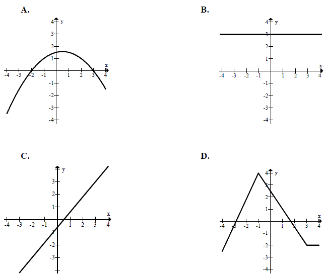

Matura 2012 maj
Cenę nart obniżono o \(20\%\), a po miesiącu nową cenę obniżono o dalsze \(30\%\).
W wyniku obu obniżek cena nart zmniejszyła się o
A.\(44\% \)
B.\(50\% \)
C.\(56\% \)
D.\(60\% \)
A
Liczba \(\sqrt[3]{{(-8)}^{-1}}\cdot {16}^{\frac{3}{4}}\) jest równa
A.\( -8 \)
B.\( -4 \)
C.\( 2 \)
D.\( 4 \)
B
Liczba \( {(3-\sqrt{2})}^{2}+4(2-\sqrt{2}) \) jest równa
A.\(19-10\sqrt{2} \)
B.\(17-4\sqrt{2} \)
C.\(15+14\sqrt{2} \)
D.\(19+6\sqrt{2} \)
A
Iloczyn \( 2\cdot \log_{\frac{1}{3}}9 \) jest równy
A.\(-6 \)
B.\(-4 \)
C.\(-1 \)
D.\(1 \)
B
Wskaż liczbę, która spełnia równanie \( |3x+1|=4x \).
A.\(x=-1 \)
B.\(x=1 \)
C.\(x=2 \)
D.\(x=-2 \)
B
Liczby \( {x}_{1}, {x}_{2} \) są różnymi rozwiązaniami równania \( 2x^2+3x-7=0 \).
Suma \( {x}_{1}+{x}_{2} \) jest równa
A.\(-\frac{7}{2} \)
B.\(-\frac{7}{4} \)
C.\(-\frac{3}{2} \)
D.\(-\frac{3}{4} \)
C
Miejscami zerowymi funkcji kwadratowej \( y = -3(x-7)(x+2)
\) są
A.\(x=7, x=-2 \)
B.\(x=-7, x=-2 \)
C.\(x=7, x=2 \)
D.\(x=-7, x=2 \)
A
Funkcja liniowa \( f \) jest określona wzorem \( f(x)=ax+6 \), gdzie \( a>0 \).
Wówczas spełniony jest warunek
A.\(f(1)>1 \)
B.\(f(2)=2 \)
C.\(f(3)\lt 3 \)
D.\(f(4)=4 \)
A
Wskaż wykres funkcji, która w przedziale \( \langle -4, 4 \rangle \) ma dokładnie
jedno miejsce zerowe. 
C
Liczba \( \operatorname{tg} 30^\circ -\sin 30^\circ \) jest równa
A.\(\sqrt{3}-1 \)
B.\(-\frac{\sqrt{3}}{6} \)
C.\(\frac{\sqrt{3}-1}{6} \)
D.\(\frac{2\sqrt{3}-3}{6} \)
D
W trójkącie prostokątnym \( ABC \) odcinek \( AB \) jest przeciwprostokątną i \(
|AB|=13 \) oraz \( |BC|=12 \) . Wówczas sinus kąta \( ABC \) jest równy.
A.\(\frac{12}{13} \)
B.\(\frac{5}{13} \)
C.\(\frac{5}{12} \)
D.\(\frac{13}{12} \)
B
W trójkącie równoramiennym \( ABC \) dane są \( |AC|=|BC|=5 \) oraz wysokość \(
|CD|=2 \). Podstawa \( AB \) tego trójkąta ma długość
A.\(6 \)
B.\(2\sqrt{21} \)
C.\(2\sqrt{29} \)
D.\(14 \)
B
W trójkącie prostokątnym dwa dłuższe boki mają długości \(5\) i \(7\). Obwód tego
trójkąta jest równy
A.\(16\sqrt{6} \)
B.\(14\sqrt{6} \)
C.\(12+4\sqrt{6} \)
D.\(12+2\sqrt{6} \)
D
Odcinki \(AB\) i \(CD\) są równoległe i \( |AB|=5, |AC|=2, |CD|=7 \) (zobacz
rysunek). Długość odcinka \( AE \) jest równa 
A.\(\frac{10}{7} \)
B.\(\frac{14}{5} \)
C.\(3 \)
D.\(5 \)
D
Pole kwadratu wpisanego w okrąg o promieniu \( 5 \) jest równe
A.\(25 \)
B.\(50 \)
C.\(75 \)
D.\(100 \)
B
Punkty \(A, B, C, D\) dzielą okrąg na \(4\) równe łuki. Miara zaznaczonego na
rysunku kąta wpisanego \(ACD\) jest równa 
A.\( 90^\circ \)
B.\( 60^\circ \)
C.\( 45^\circ \)
D.\( 30^\circ \)
C
Miary kątów czworokąta tworzą ciąg arytmetyczny o różnicy \( 20^\circ \) .
Najmniejszy kąt tego czworokąta ma miarę
A.\(40^\circ \)
B.\(50^\circ \)
C.\(60^\circ \)
D.\(70^\circ \)
C
Dany jest ciąg \( (a_n) \) określony wzorem \( a_n=(-1)^n\cdot \frac{2-n}{n^2} \)
dla \( n\ge 1 \). Wówczas wyraz \( a_5 \) tego ciągu jest równy
A.\(-\frac{3}{25} \)
B.\(\frac{3}{25} \)
C.\(-\frac{7}{25} \)
D.\(\frac{7}{25} \)
B
Pole powierzchni jednej ściany sześcianu jest równe \( 4 \). Objętość tego
sześcianu jest równa
A.\(6 \)
B.\(8 \)
C.\(24 \)
D.\(64 \)
B
Tworząca stożka ma długość \( 4 \) i jest nachylona do płaszczyzny podstawy pod
kątem \( 45^\circ \). Wysokość tego stożka jest równa
A.\(2\sqrt{2} \)
B.\(16\pi \)
C.\(4\sqrt{2} \)
D.\(8\pi \)
A
Wskaż równanie prostej równoległej do prostej o równaniu \( 3x-6y+7=0 \)
A.\(y=\frac{1}{2}x \)
B.\(y=-\frac{1}{2}x \)
C.\(y=2x \)
D.\(y=-2x \)
A
Punkt \( A \) ma współrzędne \( (5, 2012) \). Punkt \( B \) jest symetryczny do
punktu \( A \) względem osi \( Ox \), a punkt \( C \) jest symetryczny do punktu \( B \) względem
osi \( Oy \) . Punkt \( C \) ma współrzędne
A.\((-5;-2012) \)
B.\((-2012;-5) \)
C.\((-5;2012) \)
D.\((-2012;5) \)
A
Na okręgu o równaniu \( (x-2)^2+(y+7)^2=4 \) leży punkt
A.\(A=(-2,5) \)
B.\(B=(2,-5) \)
C.\(C=(2,-7) \)
D.\(D=(7,-2) \)
B
Flagę, taką jak pokazano na rysunku, należy zszyć z trzech jednakowej szerokości
pasów kolorowej tkaniny. Oba pasy zewnętrzne mają być tego samego koloru, a pas znajdujący się
między nimi ma być innego koloru. Liczba różnych takich flag, które można uszyć, mając do dyspozycji
tkaniny w \( 10 \) kolorach, jest równa
A.\(100 \)
B.\(99 \)
C.\(90 \)
D.\(19 \)
C
Średnia arytmetyczna cen sześciu akcji na giełdzie jest równa \( 500 \) zł. Za pięć
z tych akcji zapłacono \( 2300 \) zł. Cena szóstej akcji jest równa
A.\(400 \) zł
B.\(500 \) zł
C.\(600 \) zł
D.\(700 \) zł
D
Rozwiąż nierówność \(x^2 + 8x + 15 > 0\).
\(x\in (-\infty ;-5) \cup (-3;+\infty )\)
Uzasadnij, że jeśli liczby rzeczywiste \( a, b, c \) spełniają nierówności \( 0 \lt
a \lt b \lt c \), to \( \frac{a+b+c}{3}>\frac{a+b}{2} \).
Liczby \(x_1 = -4\) i \(x_2 = 3\) są pierwiastkami wielomianu \(W(x) = x^3 + 4x^2 - 9x - 36\). Oblicz trzeci pierwiastek tego wielomianu.
\(x=-4\) lub \(x=-3\) lub \(x=3\)
Wyznacz równanie symetralnej odcinka o końcach \(A = (-2,2)\) i \(B = (2,10)\).
\(y=-\frac{1}{2}x+6\)
W trójkącie \(ABC\) poprowadzono dwusieczne kątów \(A\) i \(B\). Dwusieczne te
przecinają się w punkcie \(P\). Uzasadnij, że kąt \(APB\) jest rozwarty.
Ze zbioru liczb \(\{1, 2, 3, 4, 5, 6, 7\}\) losujemy dwa razy po jednej liczbie ze
zwracaniem. Oblicz prawdopodobieństwo zdarzenia \(A\), polegającego na wylosowaniu liczb, których
iloczyn jest podzielny przez \(6\).
\(P(A)=\frac{17}{49}\)
Ciąg \((9, x, 19)\) jest arytmetyczny, a ciąg \((x, 42, y, z)\) jest geometryczny.
Oblicz \(x\), \(y\) oraz \(z\).
\(x=14\), \(y=126\), \(z=378\)
W graniastosłupie prawidłowym czworokątnym \(ABCDEFGH\) przekątna \(AC\) podstawy
ma długość \(4\). Kąt \(ACE\) jest równy \(60^\circ\). Oblicz objętość ostrosłupa \(ABCDE\)
przedstawionego na poniższym rysunku. 
\(V=\frac{32\sqrt{3}}{3}\)
Miasto \(A\) i miasto \(B\) łączy linia kolejowa długości \(210\) km. Średnia
prędkość pociągu pospiesznego na tej trasie jest o \(24\) km/h większa od średniej prędkości pociągu
osobowego. Pociąg pospieszny pokonuje tę trasę o \(1\) godzinę krócej niż pociąg osobowy. Oblicz
czas pokonania tej drogi przez pociąg pospieszny.
\(t=2{,}5\) h